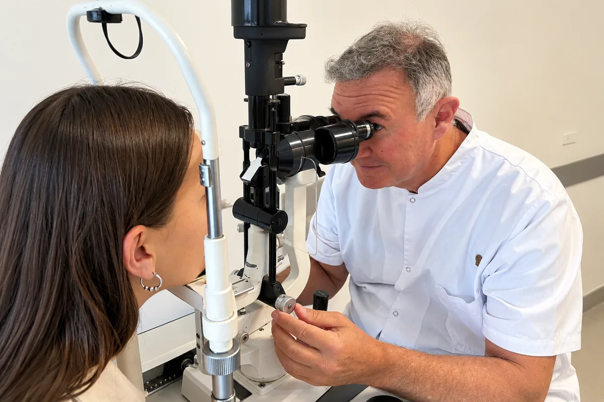

Especialidad
Glaucoma: diagnóstico, control y tratamiento
Una enfermedad silenciosa que daña el nervio óptico. Detectarla a tiempo es la diferencia.
En pocas palabras
Qué es y qué tratamos
El glaucoma no da síntomas hasta etapas avanzadas y la visión que se pierde no se recupera. Por eso la subespecialidad se apoya en dos pilares: detectarlo temprano en las personas con riesgo y controlarlo de por vida en quienes ya lo tienen, con estudios que miden lo que el paciente todavía no nota.


Preguntas frecuentes
Sobre glaucoma
¿El glaucoma tiene síntomas?
En general no, hasta etapas avanzadas. La pérdida empieza por la visión periférica y el paciente no la nota. Por eso el control es la única forma de detectarlo a tiempo.
¿Cada cuánto hay que controlarse?
A partir de los 40 años, un control oftalmológico anual con medición de la presión ocular. Con antecedentes familiares o factores de riesgo, el especialista define la frecuencia.
¿El glaucoma se cura?
No, pero se controla. Con tratamiento y seguimiento, la gran mayoría de las personas conserva su visión útil de por vida.
¿Quiénes tienen más riesgo?
Mayores de 40, personas con familiares con glaucoma, miopía alta, diabetes, uso prolongado de corticoides o presión ocular elevada.
Turnos
Consultá con los especialistas en glaucoma
Lunes a viernes de 7:30 a 19:30 en Bv. Chacabuco 879, Nueva Córdoba. Para urgencias, guardia las 24 horas.